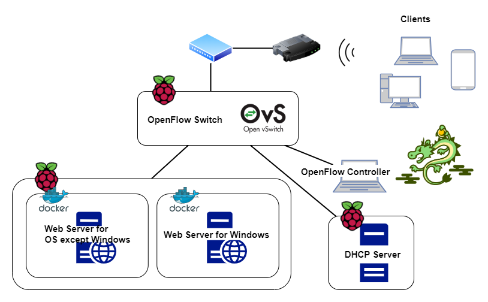

TODO：
目次
背景
概要
目的
分類
（画像のモーダルウィンドウ）
（D3.jsでグラフ書き直す）
山井班テーマ2では 「DHCP fingerprintingによる機種依存サービス提供システム」 の制作を行いました。
DHCP fingerprintingはOS fingerprintingというOSを識別する方法の一つでありDHCPプロトコルを利用します。DHCPはコンピュータがネットワークに接続したときに他のコンピュータと通信するときに必要となるIPアドレスを取得するために利用するプロトコルです。IPアドレスを取得しようとするDHCPクライアントはDHCPサーバを発見するためにDHCP DISCOVERパケット、DHCP OFFERパケットによってDHCPサーバから提示されたIPアドレスをリクエストするためにDHCP REQUESTパケットを送信します。
DHCPメッセージのフォーマットは次の画像のようになっており、DHCPクライアントから送信されるDHCP DISCOVER、 REQUESTパケットには赤い点線で囲まれたoptionsの部分にクライアントのOSの情報が含まれるため、これを見ることでOSの識別を行うことができます。

実際にiOS、Windows、Androidから送信されたDHCPメッセージをWiresharkでキャプチャしてoptions部分の内容を取り出したものは次のようになっています。DHCPメッセージのoptionsには複数のoption情報が含まれており12番と60番のオプションにOSを識別する情報が入っています。このように今回のシステム制作ではOSを識別するために12番と60番のオプションを見て簡易的にOSの識別を行っていますが、 これらの値は変更可能なため正確にはOSごとに異なるDHCPメッセージのオプションの番号を見ることでOSの識別を行う必要があります。 この他にもOSごとの実装の違いによるIP、TCPヘッダのフラグの値の差異によるOSの識別 （p0f というツールで簡単に実行できます） を行うことでより精度の高いOSの識別を行うことができます。
OpenFlowはSDN（Software Defined Network）
というソフトウェアでネットワークを定義する技術の一つです。
OpenFlowでは、従来1つのネットワーク機器で行われていたパケットの転送とコントロールを、それぞれOpenFlowスイッチとOpenFlowコントローラに分けて行います。
OpenFlowスイッチではフローテーブルと呼ばれるテーブルを持ちフローテーブルにはフローエントリが格納されています。
フローエントリにはパケットのヘッダ情報にマッチする条件と、条件にマッチしたときに実施するアクションが格納されています。
OpenFlowスイッチでは未知のパケットを受信するとOpenFlowコントローラにPacket-Inメッセージを発行し、OpenFlowコントローラにパケットの処理方法を問い合わせます。
そして、Packet-Outメッセージによってパケットの送信、Flow-Modメッセージによってフローエントリの更新を行います。

今回のシステム制作で実際に構築したネットワークの構成は次の図のようになっています。このネットワークでは3つのラズベリーパイを利用し、それぞれDHCPサーバ、DNSサーバ、OpenFlowスイッチ、Webサーバとして利用しました。そしてスイッチングハブでOpenFlowスイッチとアクセスポイントを接続しました。
このシステムではクライアントから送信されるDHCPメッセージをOpenFlowコントローラで解析し、クライアントのMacアドレスとOSの紐付けを行います。ネットワーク内に設置したWebサーバにWindowsからのアクセスはWindows用のサーバ、それ以外のOSの場合はもう一つのサーバにアクセスを振り分けるようにフローテーブルの追加を行います。
そのため、DHCPサーバ、Webサーバ、OpenFlowコントローラはクライアントからのアクセスがOpenFlowスイッチを経由するように機器を接続しました。
OpenFlowスイッチには
Open vSwtich
、OpenFlowコントローラにはPythonで記述することのできるSDNフレームワークの
Ryu
、WEBサーバには
Apache
を使用しました。
次のようにDockerを利用することで1台のラズパイの中で複数台のWEBサーバを動作させる方法も試したのですが、これではHTTPヘッダのUser-Agentを見てOSを識別してOSごとに異なるレスポンスを返すことができるため、DHCP fingerprintingとOpenFlowを利用したサーバ選択を行っているかわからないためDockerを利用せず1つのラズパイに1つのWEBサーバを搭載するようにしました。
OSごとのネットワークのトラフィックをモニタリングするアプリケーション（以下MonitorApp）ではOpenFlowスイッチを通過するパケットをポートミラーリングによって一つのポートに集約してOSごとのパケット数をカウントします。そして1秒毎にカウントしたOSごとのパケット数をサーバからすべてのクライアントへ送信します。すべてのクライアントへの送信を終えたらパケットのカウンタを初期化して1秒後に再び送信します。OSの識別にはOpenFlowコントローラと同じようにDHCP DISCOVER、 REQUESTパケットを発見したらDHCP fingerprintingを行っています。
サーバからクライアントにOSごとのトラフィックの情報を送信する方法としてはWebSocketを選択しました。 これはステートレスな通信を行うHTTPとは異なりステートフルな通信を行うWebSocketを用いることでサーバとクライアントとの通信路を確立し、トラフィックの削減およびサーバからのメッセージの送信を簡潔に行うためです。 ステートフルな通信のデメリットとしてスケールアウトに弱いという性質がありますが、今回の制作で作成したネットワークの規模が大きくならないことや、多くのクライアントからのアクセスもないと考えられるためスケールアウトは無視しており、サーバはクライアントの情報を保持しステートフルに通信を行いことができると考えました。 ステートフルな通信によってサーバはコネクションを確立したクライアントの情報を保持し続けるため、クライアントの増加によってサーバの負荷が大きくなることからAjaxによる非同期通信によってサーバからデータを取得することも考えたのですが今回の制作で作成したネットワークの規模が小さいことや、多くのクライアントからのアクセスもないと考えられるためステートフルな通信に耐えうると考えました。
MonitorAppでのサーバサイドのプログラミング言語にはGoを利用しました。
大量のパケットを処理することとなることから実行速度の速い言語としてC/C++とRustなども考えたのですがシンプルで読みやすい構文や充実したライブラリ、WEBサーバ、パケットのキャプチャ、websocketによるデータの送信を同時に行うため並行処理の書きやすや、実行速度の速さなどを重視してGoを選択しました。
パケットのキャプチャには
google/gopacket
、websocketには
gorilla/websocket
を利用しました。
-
Dynamic Host Configuration Protocol
https://tools.ietf.org/html/rfc2131 -
Software-Defined Networking (SDN): Layers and Architecture
Terminology
https://tools.ietf.org/html/rfc7426 -
The Open vSwitch Database Management Protocol
https://tools.ietf.org/html/rfc7047 -
Open vSwitch. An Open Virtual Switch
http://openvswitch.org/ -
The WebSocket Protocol
https://tools.ietf.org/html/rfc6455 -
osrg/ryu
https://github.com/osrg/ryu -
Apache
https://httpd.apache.org/ -
COMPONENT-BASED SOFTWARE DEFINED NETWORKING FRAMEWORKBuild SDN
Agilely
https://osrg.github.io/ryu/ -
Using OpenFlow 1.3 RYU SDN Framework
https://osrg.github.io/ryu-book/ja/Ryubook.pdf - かんたん！OpenFlowスタートガイド 五十嵐裕也（Ikarashi Hiroya）@山井研
-
docker
https://www.docker.com/ -
Go
https://golang.org/ -
gorilla/websocket
github.com/gorilla/websocket -
google/gopacket
github.com/google/gopacket -
Reverse Proxy Guide
https://httpd.apache.org/docs/2.4/howto/reverse_proxy.html -
Chart.js
https://www.chartjs.org/